關於我們 /
ABOUT US
公司簡介 / COMPANY INTRODUCTION
優良的木材製品，來自於持續追求製程品質的團隊”
正豪木業自1993年成立迄今，以品質、創新、客戶為先的經營信念，努力耕耘實木門領域，擁有超過40年經歷的資深師傅做專業製造與嚴謹監督，多年來深獲國內外客戶的高度肯定。
我們不斷的改良製作工法，以木門不只「美麗」更要「堪用」的堅定信念，提供環保永續林的高級樹種，選用安全認證塗料及木膠，更是100%台灣手工製造，絕非假他人代工，所有品質由我們嚴格控管。
本公司使用與日本技術合作之漆面塗料，並擁有多種自行研發之特殊漆面，提供客戶更多樣化的選擇。我們採用通過日本食品衛生無毒證明，不含甲醛(福馬林)、重金屬等毒物之膠著劑，在2012年因對於品質的堅持與正豪全體員工努力下，取得臺灣製MIT微笑標章驗證，並於2018年獲得MIT台灣金選肯定。
做最優良的木材製品與最貼心的銷售服務，來回饋給支持正豪木業實木產品的您，是正豪一直以來的堅持。
核心能力 / CORE COMPETENCY
以精巧做工與誠信原則提供產品與服務，
歡迎與我們一同研發全系列實木門”
-
專營實木產品客製化服務，提供客戶專屬產品尺寸需求，多年來已累積不少好口碑，我們期望能讓每次的產品銷售劃下完美的句點，歡迎客戶與我們一同研發全系列實木門。
-
以彈性靈活的特質及堅持品質的信念，致力於賦予質樸木門多姿色彩，提供上百款特色型式期盼滿足不同客戶(使用者)個性之完美呈現。
-
堅持100%台灣手工製造，並採用高品質天然進口木材、符合甲醛及重金屬檢驗法規原料，由工作經驗逾40年資深木器師傅與塗裝師傅，以精巧做工、高質感漆面來表現各類風格產品。
選材來源 / COUNTRY OF ORIGIN
純正樹種的選用，是我們選材的基本原則”
正豪選用的樹種不論來自北美、歐洲、或是緬甸、越南等東南亞地區，皆由合法管道進口取得。
為愛護地球，我們與有林業認證的歐美計畫型植林的森林進行木材採購。
此外，您所知道的珍貴樹種(如緬甸柚木、北美胡桃木、櫻桃木、楓木等)，我們只採用純正且高級的板材，不用魚目混珠的模糊字眼，只盼能讓您少了猜忌，安心地將最實在的實木產品融入您的生活中。
北美洲 / NORTH AMERICA
-
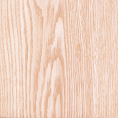
01-白栓木/梣木 (ASH)
紋路粗獷、有⼩目節，漆⾯若以刷紋表現，具有清新的美式鄉村⾵格。 -
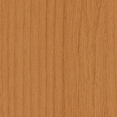
02-赤楊⽊
紋路細緻沈穩似櫻桃⽊，但無櫻桃⽊鐵質特質。適合搭配仿舊破壞漆面為室內空間增添新舊衝突之美感。 -
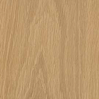
03-白橡⽊
紋路粗獷、會有⼩目節，漆⾯若以原⽊⾊或是洗⽩漆⾯表現，具有濃厚的北歐簡約⾵格。 -
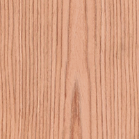
04-紅橡⽊
紋路粗獷、會有⼩目節，漆⾯若以雙⾊表現，具有獨特的南歐鄉村復古⾵韻。 -
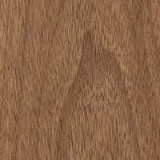
06-胡桃⽊
有古典的天然⾊澤及紋路，為高貴樹種之一。與緬甸柚木同為穩定性高之樹種，是不易伸縮的良好材質。 -
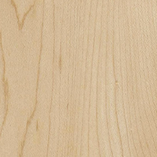
07-楓⽊
紋路漂亮、細緻。銀⽩漆⾯更能表現其 ⾼尚特質。 -
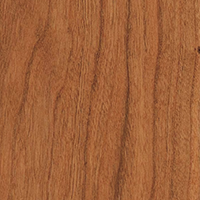
08-櫻桃木
紋路細緻內斂，搭配櫻桃深色漆面更顯⾼貴氣質。以⿊⾊⽊紋及斑點呈現鐵質特徵，使其俱耐潮之特性。
東南亞 / SOUTH EAST ASIA
-
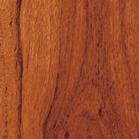
09-緬甸柚⽊
耐⽤、穩定性⾼，俱古典美感，不易退流⾏。在歲月慢磨下，緬甸柚木特有天然古銅色澤更能為室內空間增添高雅氣息。 -
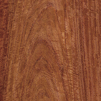
10-花梨⽊
為高貴樹種之一。⾼價值紅⽊⽊材俱有⾃然 散發芳⾹的氣味。 -
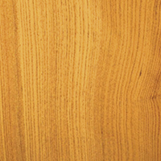
11-越南檜⽊
台灣檜⽊的替代品，原始的⽊質顏⾊使其有祖⽗母輩的溫暖親切感。 -
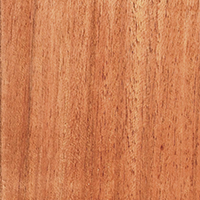
12-柳安⽊
為兩百多樹種的統稱，其中以美蘭地為柳安之最。其⽑細孔如⾬絲般細緻帶有神秘感，著⾊後呈現法式知性魅力
歐洲 / EUROPE
-
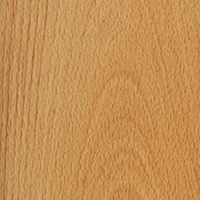
05-山毛櫸
紋路細緻，多以雪花⽚呈現。適合作 為法式貴族系列之門框底材。 -
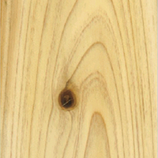
13-杉⽊
星羅棋布的目節呈現其原始美感，搭配原⽊⾊漆⾯俱⽇式鄉村⾵格。
原料把關 / SELECTION OF INGREDIENTS

原料嚴格把關及高耗材率篩選，
雖不易被看見，卻是最真誠的堅持”
為了讓喜歡實木門的您能夠安心使用實木產品，我們嚴格把關原料的選用，使用合格塗料及安全木膠，讓我們的實木產品檢測結果優於歐盟標準。
我們是在第一線接觸原料的使用者，夥伴的健康及安全是我們最關心的議題。我們愛護同仁的心，就如同您疼愛家人的心，所以不管是膠著劑的選用或是塗料的使用，請放心相信正豪木業的選擇。
√ 甲醛檢測：檢測結果優於歐盟標準。
√ 合格塗料：經SGS檢測無重金屬檢出。
√ 安全木膠：通過日本食品衛生無毒證明。
√ 選材嚴格：我們對於實木門板及相關系列產品，秉持以最嚴格的選材標準進行挑選，堅持邊材不用，高耗材率的堅
持雖不易被看見，但內行的您必定能感受到正豪木門產品的用心與精緻。
特色漆面 / FEATURES PAINT
您的風格，由您定義”
自1993年成立以來，正豪木業對於如何運用顏色及漆面賦予質樸實木門不同的風格韻味，苦心專研與琢磨，累積多年的寶貴經驗為基礎，以期提供客戶優質的服務品質。
不同於一般生產工廠提供少數實木樹種選擇，我們提供多達13種的樹種給您，由於樹種多樣，各木頭皆有其特性，讓本公司師傅練就對於樹種底材特色的掌握，以及調配合適特色漆面的專業性，歡迎您的使用與體會。
√ 掌控底材：塗裝師傅熟稔不同木頭底材的顏色特質，針對每一種木頭調配出專屬的風格色系。
√ 霧面質感：搭配質感平光漆，讓木門少了塑膠感，多了分溫潤質感。
√ 百款漆⾯：跳脫傳統單一⽊⾊框架，致⼒鑽研歐美⾵格的特⾊漆⾯，截至目前為止已開發出超過100款的特色漆面。
√ 上漆技術：木紋紋路富有靈性，如何凸顯木材特質的美，而不是一昧地蓋上厚重的顏色，即是觀察各家木門工廠上漆技術的秘訣。
獨門工法 / EXCLUSIVE TECHNOLOGY
秉持著木門不只「美麗」更要「堪用」的堅定信念”
√ 複合實木工法
為改善天然木材過度膨脹或收縮之現象，提高大型木門使用壽命，達到堅固、抗壓的效果，正豪在2016年專利申請通過中鑲複合實木工法。此法特別針對木門容易變形的部分，運用累積逾40年的獨家技術，採多道工序進行木門結構調整，搭配我們改良的膠合技術，讓正豪的木門在正常使用下不易變形扭曲，使木門歷久彌新，特別適合房間門、推拉門等較大型的傢俱使用。